PortaCON으로 설비·센서 데이터를 현장에서 바로 연결합니다.
단일 환경에서 데이터 수집부터 AI 학습·배포, 자동 모니터링·보고까지 한 번에 통합하는 제조 운영 AX 플랫폼
PORTA Product Stack
현장에 필요한 층만 설치하고, 운영하면서 확장합니다.
Porta Studio와 NeuroBase가 데이터 관계를 노코드로 정리합니다.
PORTA Apps가 SCADA, EAM, MES, EMS 운영 화면을 엽니다.
제조 AI Agent가 이상 감지, 원인 분석, 보고를 이어갑니다.
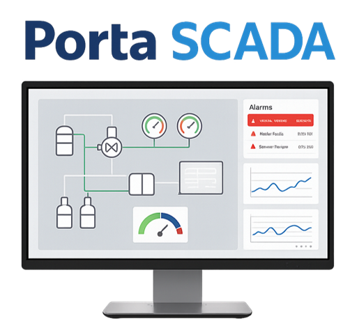
PortaCON으로 수집한 로봇·설비·IoT 센서 데이터를 Porta Studio에서 정의하면, NeuroBase가 자동 정규화와 온톨로지 매핑을 수행합니다.
정리된 데이터는 통합관제·설비관리·생산관리·품질관리·에너지관리 화면으로 흐르고, 제조 AI Agent가 이상 감지와 자동 보고를 이어갑니다.
복잡한 백엔드 개발을 줄이고, 수기·경험 의존 운영을 데이터·AI 기반 운영으로 전환합니다.
스마트 제조 운영 시스템(PORTA Apps)
PORTA의 제조 특화 모듈인 스마트 제조운영 시스템은 통합관제(SCADA), 설비(EAM), 생산(MES), 에너지(EMS) 관리 등 제조 운영에 필수적인 기능을 하나의 환경에서 제공합니다. 이를 통해 고객은 여러 시스템을 개별적으로 도입·연동·관리할 필요 없이, 통합된 플랫폼에서 효율적으로 운영할 수 있습니다.
| 통합관제(SCADA)
통합관제 모듈은 누구나 쉽고 빠르게 현장 중심의 맞춤형 공장 통합 운영관제 환경을 구성할 수 있습니다.
주요 기능
- 현장 전역 실시간 모니터링 – 온도, 압력, 전력 등 주요 설비·공정 데이터를 한눈에 확인
- 이상 상황 실시간 알림 – 온·압력 변동, 장비 이상 발생 시 즉시 팝업·문자 알림
- 원격 제어 및 설정 변경 – 사무실·모바일에서 설비 기동·정지·설정 변경 가능
- 맞춤형 대시보드 – 부서·업무별로 필요한 지표만 선택해 보는 사용자 중심 화면
- 안전·연속성 보장 – 장애 시 데이터 유실을 방지하는 이중화 저장 장치
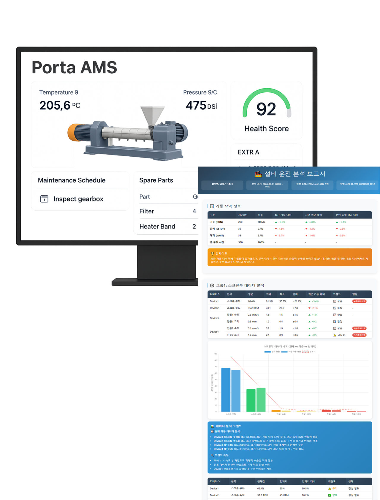
| 설비관리(EAM)
설비관리 모듈은 설비 단위의 상태와 이력을 기반으로 자동 보고서를 생성하고, 현장에서 익숙한 설비별 보고서 체계에 맞춰 운영 데이터를 정리해줍니다.
수집된 센서 데이터를 바탕으로 고장 이력, 이상 징후, 유지보수 내역 등을 자동 정리하며, 이를 통해 고장 원인 분석과 예지보전까지 이어지는 고도화된 설비 관리가 가능합니다.
기존 수기 기반의 반복 작업 없이, 각 설비별로 조건 분석과 진단이 실시간 이루어져 불량률 감소, 고장 대응 시간 단축, 가동률 향상 등 실제 운영 성과로 직결되고 있습니다.
주요 기능
- 실시간 설비 상태·가동률 모니터링 – 주요 설비의 가동 현황과 성능을 한눈에 파악
- 설비 데이터 수집·분석 – 진동, 온도 등 주요 상태 데이터 자동 수집·시각화
- 점검·고장 이력 통합 관리 – 정기 점검, 고장 발생 기록, 조치 내역까지 체계적으로 저장
- 예지·예방 정비 지원 – 알림 캘린더로 돌발 정지 사전 예방
- 고장 원인 분석·리포트 – 그래프·보고서를 통한 원인 진단 및 개선 근거 제공
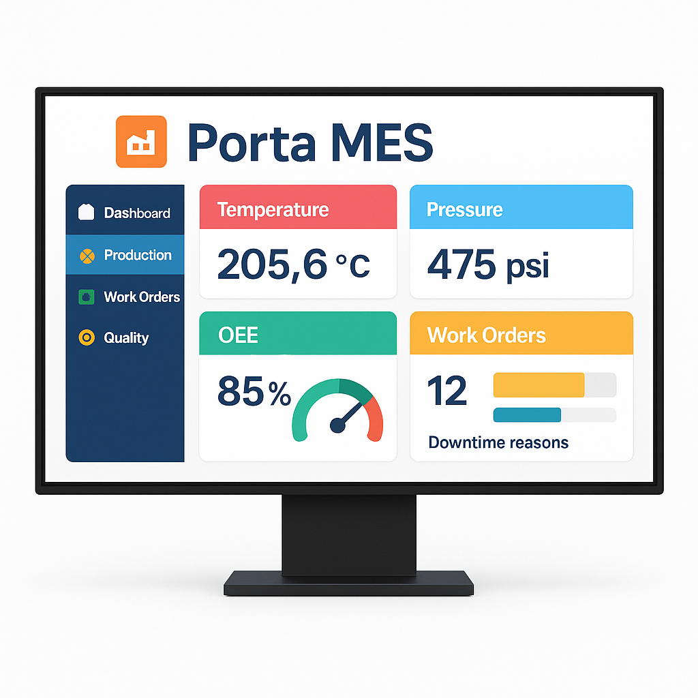
| 생산관리(MES)
생산관리 모듈은 작업 계획부터 현장 실행, 실적 분석까지 전 과정의 디지털화를 지원하여 수기 업무를 줄이고 생산 효율을 높입니다.
작업계획·지시 관리, 생산실적 자동 연동, AI 기반 다음 작업 추천과 최적 공정 제어조건 추천으로 숙련자의 노하우를 시스템화하여 생산성과 품질을 동시에 강화합니다.
주요 기능
- 작업계획·지시 관리 – 최적 계획 수립 및 현장 지시, 사용자 조건 기반 다음 작업 AI 추천 제안
- 생산실적 자동 연동 – 생산·불량 수량 자동 집계
- 공정 이력·추적 – LOT별 생산 흐름과 조건 관리
- 최적 공정 제어조건 관리 – 품질·생산 데이터 기반으로 최적 조건을 산출해 실시간 AI 추천
- 실시간 공정 모니터링 – 진행 상황·가동률·병목 현상 확인
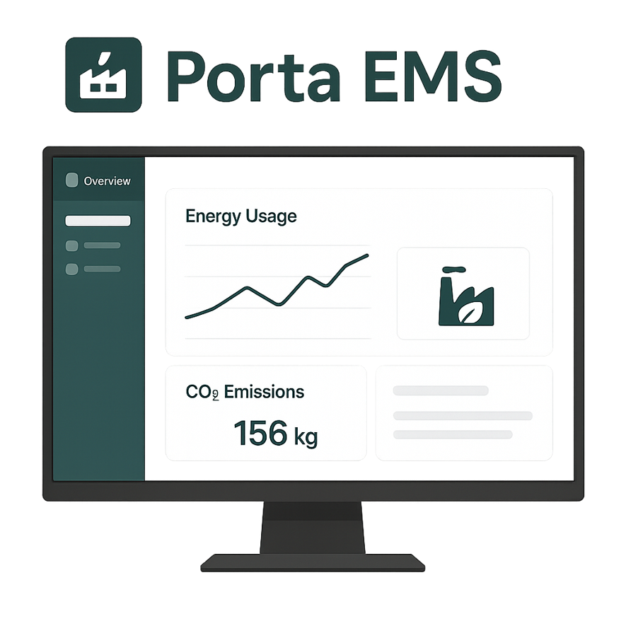
| 에너지관리(EMS)
에너지관리 모듈은 공장·빌딩·설비 단위의 에너지·전력·탄소 데이터를 통합 분석해 원단위 절감과 온실가스 감축을 동시에 달성하는 스마트 에너지 관리 기능을 제공합니다. AI가 수요 피크를 예측하고 부하별 에너지 사용량을 안내하여 수요전력의 간접 관리가 가능하도록 지원합니다.
또한, 한국에너지관리공단의 건축물에너지관리시스템 운영가이드를 준수하며, 제로에너지 건물 인증 규격을 지원합니다.
주요 기능
[제로에너지 건축물 인증 필수사항 지원]
- 건축물 일반 사항
- 데이터 수집 및 표시 / 조회 및 관리
- 에너지 소비현황 분석
- 종합 유지 관리
[제로에너지 건축물 인증 권장사항 지원]
- 에너지 소비량 예측(계약 전력 초과 예상 시 피크 경보)
- 에너지 비용 조회 및 분석
- 정보 감시
- 설비의 성능 및 효율 분석
- 실내외 환경 정보 제공
PORTA Neurobase는 노코드로 구축 가능한 맞춤형 데이터 플랫폼이자, 제조·산업 환경에 특화된 통합형 AIOps 플랫폼입니다.
데이터 파이프라인 구축부터 객체-관계형 데이터 계층 설계, AutoML 기반 데이터 학습·배포, 내장형 LLM 엔진을 통한 데이터 분석·리포트 생성까지 전 과정을 하나의 환경에서 제공합니다.
또한, AI 기반 작업 자동화 엔진을 통해 데이터 흐름과 운영 업무를 지능적으로 자동화하여, 사람이 개입하지 않아도 데이터 기반 의사결정과 실행이 가능하도록 지원합니다.
주요 기능
- 데이터 파이프라인 빌더 – 이기종 데이터 수집·정제·저장 과정을 드래그앤드롭 방식으로 구성
- 객체-관계형 데이터 계층 – 설비·공정·품질·에너지 등 산업 데이터의 관계를 구조화하여 통합 관리
- AutoML 학습·배포 – 데이터셋 선택만으로 모델 자동 학습 및 운영 환경 배포
- 내장형 LLM 데이터 분석·리포트 생성 – 자연어 질의로 데이터 탐색, 통계 분석, 자동 보고서 생성
- AI 기반 작업 자동화 – 조건·이벤트 기반으로 데이터 분석, 알림, 제어 명령 등 복합 작업을 자동 실행
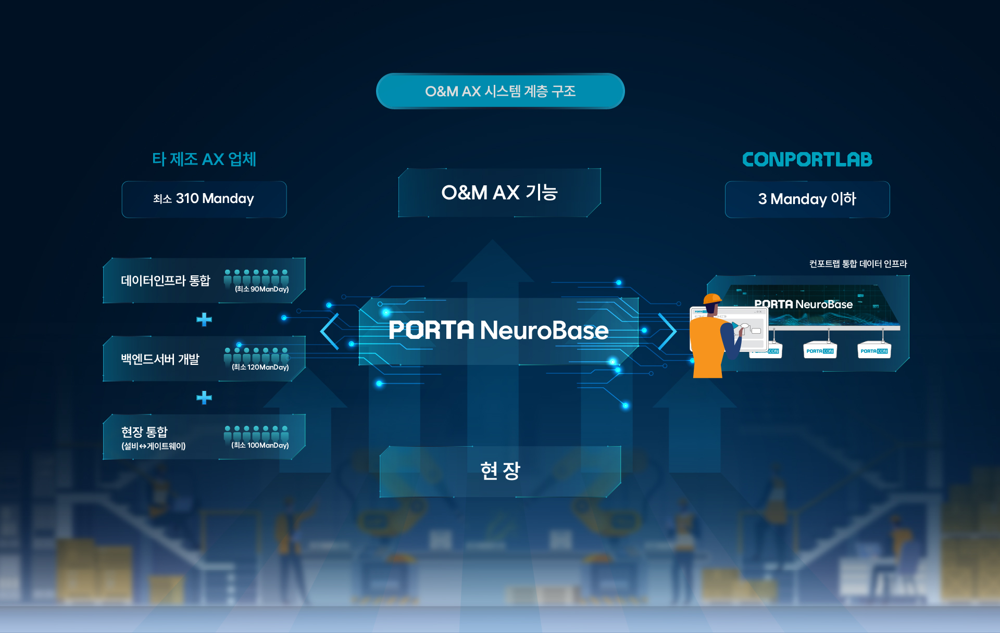
PortaCON의 초경량 임베디드 미들웨어는 작고 경량화 된 하드웨어에도 높은 성능을 보장합니다. 이를 통해 설치 공간과 전력 소모를 최소화 함으로써 효율성을 높입니다. 또한, 산업용 기준에 부합하는 부품을 사용하고 IP67등급의 방수방진 기능을 더해 터프한 산업현장에서도 24시간 365일 신뢰성있는 구동이 가능합니다.
PTC-M1 (기본형)
PTC-P1 (고급형)
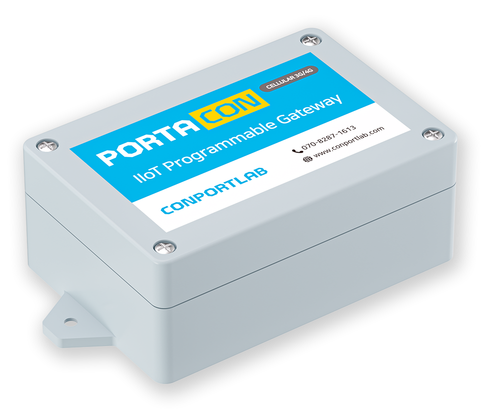
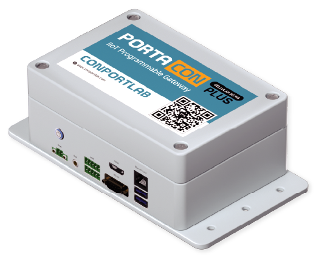
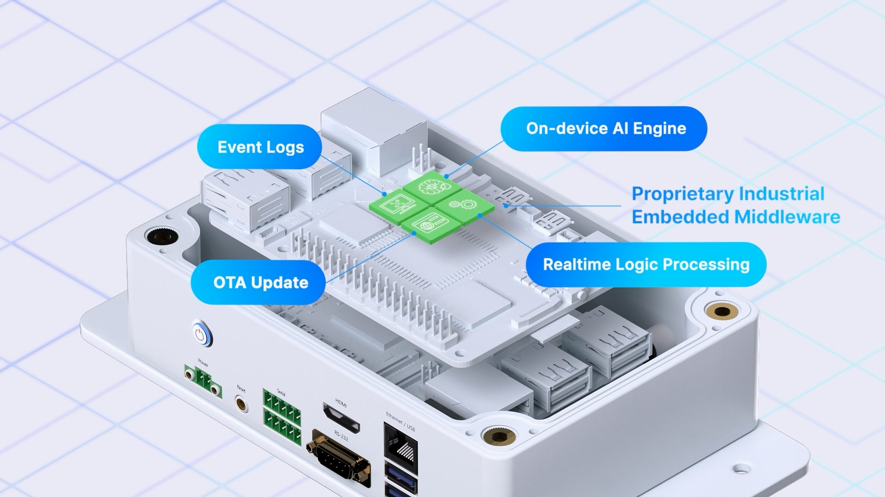
PortaCON: IIoT 프로그래머블 게이트웨이
PortaCON은 고신뢰성의 실시간 제어시스템 미들웨어를 탑재하여, 산업현장에서 안전한 시스템을 구축할 수 있도록 도와줍니다. 실시간 제어시스템 미들웨어는 고속의 필드 I/O 처리, 실시간 사용자 로직 엔진, 이벤트, 산업용 통신 등 산업용 제어시스템이 공통적으로 요구하는 기능이 선탑재되어 있으며, 사용자 로직을 독립적으로 구동가능한 환경을 제공합니다.
PortaCON은 실시간 현장 제어시스템으로서 갖추어야 할 기본 기능들을 모두 포함하고 있음으로써, 사용자는 비지니스로직에만 집중할 수 있도록 도와줍니다.
산업용 표준 인터페이스 및 통신 프로토콜 지원
PortaCON은 전력분야와 자동화분야에서 통용되는 산업용 표준 인터페이스와 통신 프로토콜을 지원합니다. 시리얼 통신 및 필드버스부터 산업용 응용 프로토콜까지 지원함으로써, 다양한 현장 장비들 및 상위 시스템과 즉시 연계가 가능합니다.
- 시리얼 통신 지원 : RS232/RS485/RS422
- 필드버스 지원 : CAN/DeviceNet/ProfiBus
- 표준 통신 프로토콜 지원 : Modbus/DNP3/IEC60870-5/MQTT/OPC-UA
또한 PortaCON Wireless 모델은 무선 상용망을 지원(3G/LTE or NB-IoT/LTE-M)하는 모델부터 Wifi 지원 모델, Bluetooth 지원 모델까지 제공되며, 이를 통해 다양한 산업용 IoT 단말 장치로서의 기능을 지원합니다. 기동성이 높은 E-Mobility와 유선 망을 구축하기 어려운 현장에 최적화 되어 있습니다.
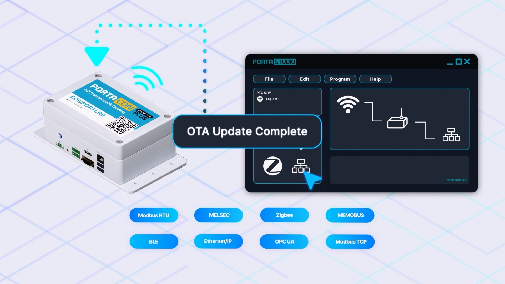
Key Common Functions
- Field Data <-> TCP-Based Standard Communication Protocol Conversion Function
- Support for 2 Modes : Converter Mode & Controller Mode
- User Logic Programming through a NO-CODE Based Integrated Development Environment (IDE)
- Real-Time Processing Support
- Over The Air (OTA) Update Support
Specifications
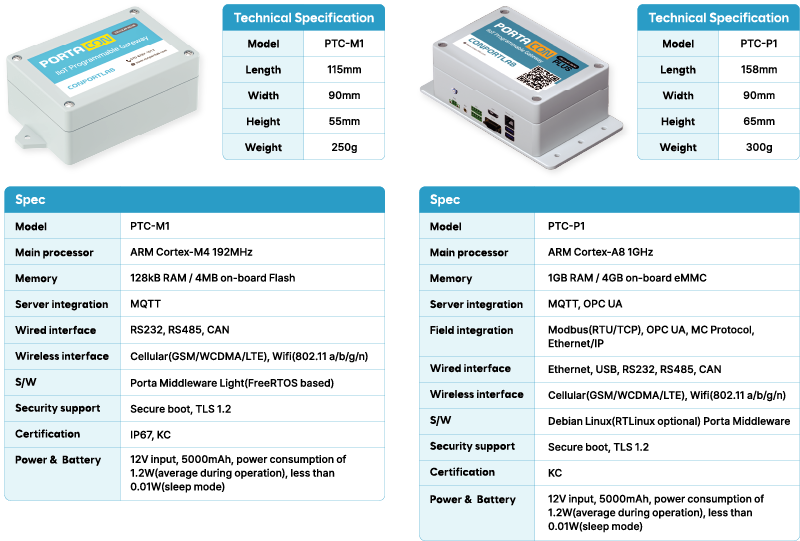
Porta Studio는 No-Code기반의 PortaCON 개발 및 현장 시스템 구축을 위한 통합 개발환경(IDE)과 운영을 위한 통합 운영환경(Admin)을 제공하는 웹 기반의 서비스입니다.
Porta Studio IDE는 No-Code 방식을 통해 전문 인력 없이도 추상화된 데이터 태그와 논리식 기반으로, 마치 레고 혹은 코딩봇과 유사하게 PortaCON의 제어로직을 정의할 수 있으며, 연결 요소들을 정의하고 연결 요소들과 송수신을 위한 메시지 또한 자유롭게 정의 가능합니다. 산업용 표준 통신 프로토콜은 몇 번의 클릭 만으로 선택 및 사용이 가능하여, 별도의 비싼 표준 통신 프로토콜 라이브러리를 구매할 필요가 없습니다. 이를 통해 간편한 시스템 통합을 정의할 수 있는 기능을 제공합니다. 이러한 IDE의 핵심 기능은 클라우드 기반의 Porta Studio의 빌드 서비스와 연동되어 제공됩니다. 원격지의 빌드 서버로 빌드 요청을 하게 되며, 빌드 서버는 타겟 PortaCON에 적합한 컴파일러를 통해 미들웨어와 함께 F/W 바이너리로 최종 빌드하고 해당 빌드 결과물은 Porta Studio에 의해 지속적으로 관리됩니다.
Porta Studio Admin은 PortaCON으로 구성된 현장 시스템을 구조적으로 관리할 수 있게 지원하며, 사용자 단위의 전체 그룹인 Workspace, 하위 현장 시스템 단위의 Site 형태의 Tree구조로 관리할 수 있도록 지원합니다. 각 Site에서는 PortaCON으로 통합된 현장의 데이터를 관리할 수 있으며, 현장으로 명령 전송도 가능합니다. 하나의 Site는 여러 PortaCON으로 구성이 가능하며, PortaCON 외의 IoT 장비들 또한 Site에 통합을 지원합니다. 사용자가 별도로 개발한 대시보드를 Site에 연동이 가능해 더욱 다채로운 운영 환경 구성이 가능합니다. Porta Studio Admin은 IDE를 통해 개발된 결과물을 웹을 통해 현장의 OTA 업데이트 진행이 가능하도록 지원하며, 사용자는 현장 방문 없이도 현장 시스템을 쉽게 유지보수 할 수 있습니다.
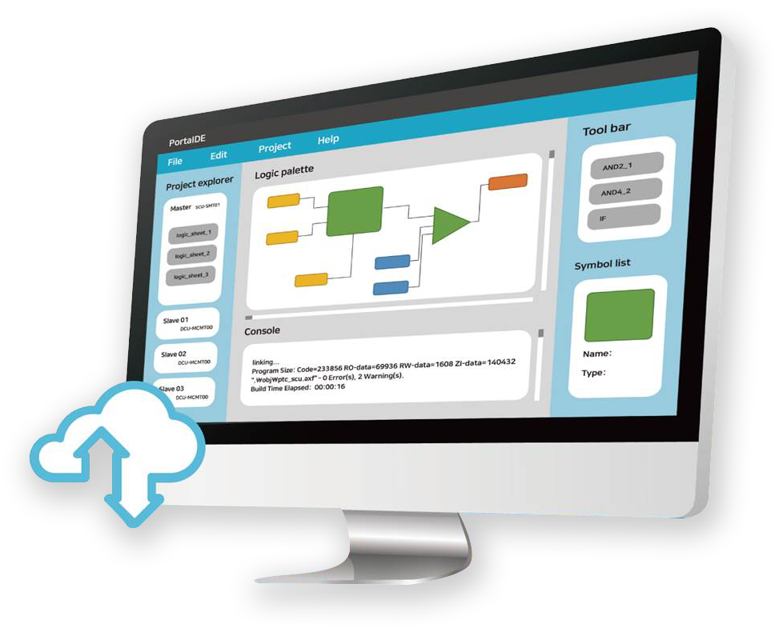

설비에 데이터 포인트가 없거나 접근이 어려워도, 아날로그 센서만 있는 현장이라도 걱정하지 마세요.
컨포트랩은 직접 연동과 안정성 테스트를 통과한 다양한 종류의 센서를 직접 보유하고 있습니다.
PortaCON + 검증된 센서 패키지로 온도, 습도, 진동, 압력, 무게(하중), 유량, 전력·전력량계 등 데이터 수집을 원하는 지표를 모두 안정적으로 수집할 수 있는 환경을 구성해 드립니다.
센서 선정→소싱→연동→테스트·인증→현장 검증을 한 번에 책임지고, 노이즈·통신 안정성·장시간 번인까지 철저히 확인해 현장 신뢰성을 보장합니다. 필요한 데이터가 없던 라인도, 그 자리에서 데이터를 수집할 수 있는 라인으로 전환해 드립니다.
산업용 센서
컨포트랩이 직접 검증 및 보장하는 산업용 센서
컨포트랩 보유 센서 리스트
온도(수온) 측정 센서
수온 측정용 센서
양식장 수질 데이터 수집 시스템용
3축 진동 센서
3축 디지털 출력 MEMS 진동 감지 모듈
모터 등 진동 발생 설비 데이터 수집/측정
IoT 전력량계(단상), CT포함
RS485 지원 스마트 전력량계
모델명: DAU-EM101
컨포트랩 KC 인증 획득
제조사: 중국
IoT 전력량계(삼상), CT포함
RS485 지원 스마트 전력량계
모델명: DAU-EM301
컨포트랩 KC 인증 획득, CE 인증
제조사: 중국
용존 산소 센서
수중(양식장) 산소량 측정용 센서
양식장 수질 데이터 수집 시스템용
pH센서
수질(pH농도) 측정용 센서
양식장 수질 데이터 수집 시스템용